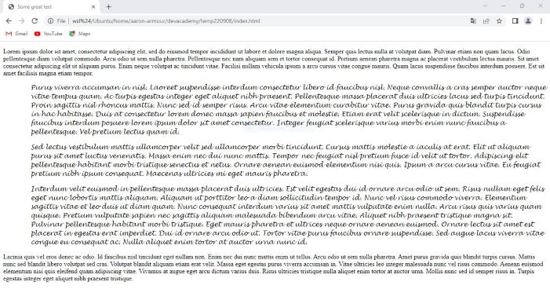
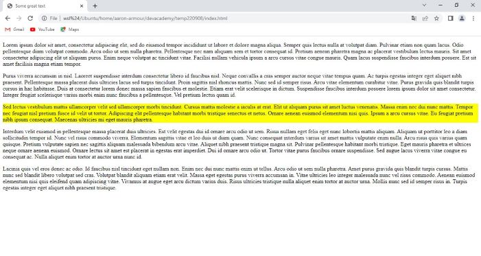
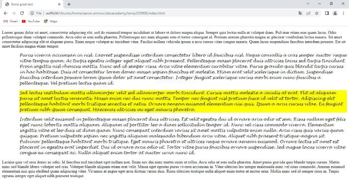

Suppose that you have created all of the content for a web page and it is in a HTML file, now all you need to do is make it look great. The way that you do this is by applying styling rules to your HTML file. These styles use a language called cascading style sheets (or CSS for short). The styling can be applied to the entire page, or all elements of a certain type on your page (such as all paragraphs). However, sometimes you may want more control than this and you may wish to apply the styling to only very specific elements, or perhaps even just to a single element. This is where classes and ids come in.
Classes are a way to select multiple elements in your HTML, whereas ids are used to select a single specific element. Ids should be unique, if you give an element the id of 'my-favourite', then no other element should have this same id. Whereas it is common for many elements to share the same class.
One way to imagine these is with the analogy of a school, where ids are students' names and classes are, well, their classes! (Let's assume that there are no students with exactly the same name.) If you want to put a single student into detention, you address them by name, 'Bob Smith go to detention'. Whereas, if the entire class of students has been acting up, you might say 'Room 3.20 go to detention'. In this way ids are similar to the students' names in that they only refer to a single individual item. Classes on the other hand refer to multiple items.
Finally, note that ids can have other special uses such as being able to be reached directly by link, this can be useful to avoid lots of scrolling on long pages. Ids can also be used by Javascript, but we won't go further into this here.
After all this, you may be surprised to hear that, actually, if you can avoid using classes and ids then you should. However, they do serve a legitimate purpose and there are situations where you will need to use them. If you can't do without them, then you should use them as follows:
As an example of a class, in the HTML file <p class="quotation">This is a really amazing quotation...</p>. In the CSS file there would need to be lines with styling instructions like: .quotation { /* CSS styling here */ }. Suppose that the CSS styling was to add an indent and use a cursive font, the result might look like:
As an example of how to use a class, in the HTML file <p id="my-favourite">But of this entire quote, this bit is by far the best...</p>. In the CSS file there would need to be lines with styling instructions like: .quotation { /* CSS styling here */ }. If the CSS styling simply added a yellow background to this id, the result may look like:
Elements can have both a class and a style. (For example, <p id="my-favourite" class="quotation">But of this entire quote, this bit is by far the best...</p>.) And there can also be certain situations where you may need to use both. For example, you have a generic 'quotation' style you want to apply to paragraphs that are quotes. Amongst the quote there is a favourite paragraph and you would like to highlight this, in addition to the usual styling applied to quotes. Note that are more specific, so that in any clashes between styling from a class and styling from an id, the styling from the id will be the one that gets applied. If both of the class and id styling rules from the previous examples were applied in the same example (with the third paragraph having the id 'my-favourite') then the result would be:
In the blog post Best Practices for ID and Class Names, Jens Meiert makes the following helpful recommendations about how to name classes and ids. If you need to use a class or an id, give them a functional name - i.e. one which is derived from their functionality. Failing this, then give them a generic, or "neutral" name. As a final suggestion on naming he says "Use names as short as possible but as long as necessary".
Classes and ids are a powerful tool to help us apply styling to our plain HTML. They should only be used where necessary, and where they are required we need to think about which is most appropriate to use. Finally, we should give our classes and ids meaningful names to help with maintenance down the track.
Return to home page.